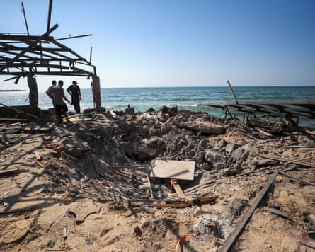

The Israeli military used a 500lb (230kg) bomb – a powerful and indiscriminate weapon that generates a massive blast wave and scatters shrapnel over a wide area – when it attacked a target in a crowded beachfront cafe in Gaza on Monday, evidence seen by the Guardian has revealed.
Experts in international law said the use of such a munition despite the known presence of many unprotected civilians, including children, women and elderly people, was almost certainly unlawful and may constitute a war crime.
Fragments of the weapon from the ruins of al-Baqa cafe photographed by the Guardian have been identified by ordnance experts as parts of an MK-82 general purpose 230kg bomb, a US-made staple of many bombing campaigns in recent decades.
The large crater left by the explosion was further evidence of the use of a large and powerful bomb such as the MK-82, two ordnance experts said.
An Israel Defense Forces (IDF) spokesperson said the attack on the cafe was under review and that “prior to the strike, steps were taken to mitigate the risk of harming civilians using aerial surveillance”.
Medical and other officials said between 24 and 36 Palestinians were killed in the attack on the cafe and dozens more were injured. The dead included a well-known film-maker and an artist, a 35-year-old housewife and a four-year-old child. Among the injured were a 14-year-old boy and a 12-year-old girl.
Under international law based on the Geneva conventions, a military force is forbidden to launch attacks that cause “incidental loss of civilian life” that is “ excessive or disproportionate ” to the military advantage to be gained.
What is considered acceptable is open to interpretation but experts said only a target whose elimination might have a very significant impact on the course of a conflict could justify the death of dozens of civilians.
The cafe had two storeys – an open upper deck and a lower floor with wide windows on to the beach and sea – and approaches that were clearly visible from above.
A closeup of a bomb fragment from the ruins of al-Baqa cafe.Photograph: Enas Tantesh/The Guardian
Gerry Simpson, of Human Rights Watch, , said: “The Israeli military hasn’t said exactly whom it was targeting but it said it used aerial surveillance to minimise civilian casualties, which means it knew the cafe was teeming with customers at the time.
“The military would also have known that using a large guided air-dropped bomb would kill and maim many of the civilians there. The use of such a large weapon in an obviously crowded cafe risks that this was an unlawful disproportionate or indiscriminate attack and should be investigated as a war crime.”
Dr Andrew Forde, an assistant professor of human rights law at Dublin City University, said the strike was shocking. “When you see a situation where there are heavy munitions being used, particularly [in a] crowded civilian space, even with the best targeting in the world … that will necessarily create an indiscriminate outcome that is not in compliance with … the Geneva conventions,” he said.
The family-run al-Baqa cafe was founded almost 40 years ago and was well known as a recreation spot for young people and families in Gaza City. It served a small selection of soft drinks, tea and biscuits.
Though the vast majority of Gaza’s 2.3 million population suffer acutely with growing malnutrition and a continuing threat of famine, some have savings or salaries that allow them to patronise the few remaining cafes.
The port area where al-Baqa cafe was located was not covered by any of the evacuation orders issued by the IDF to warn of impending military operations.
A crater at the scene of Monday’s airstrike.Photograph: Mahmoud Issa/Reuters
Marc Schack, an associate professor of international law at the University of Copenhagen, said: “It is almost impossible to see how this use of that kind of munition can be justified. If you are talking about 20, 30, 40 or more civilian casualties, usually that would have to be a target of very great importance … For coalition forces in Afghanistan and Iraq, the accepted number for a very high-level target was less than 30 civilians getting killed, and only then in exceptional circumstances.”
Trevor Ball, a weapons researcher and former US army explosive ordnance disposal technician, identified a Jdam tail section and thermal battery which he said suggested either an MPR500 or an MK-82 bomb was dropped.
Another expert with extensive experience of recent conflicts identified the bomb similarly. A third said they could not make a reliable assessment from the pictures presented to them.
Israel has a wide range of munitions and has frequently used much smaller weapons for precision strikes against individuals in Gaza , Lebanon and in its recent air offensive in Iran.
The IDF said in a lengthy statement earlier this year that even the most sophisticated measures employed to assess civilian harm were hardly ever perfect and that its choice of munitions was “a professional matter contingent on the nature of the strike’s objective”.
The statement said: “While some targets are suitable for smaller payloads, others may require heavier munitions to achieve mission success – for example, when intending to destroy structures that are built with certain hard materials, large structures, or underground tunnel.”
On Tuesday, an Israeli government spokesperson said the IDF “never, ever targets civilians”.
Israel has repeatedly accused Hamas of using civilians as human shields, a charge that the militant Islamist group denies.